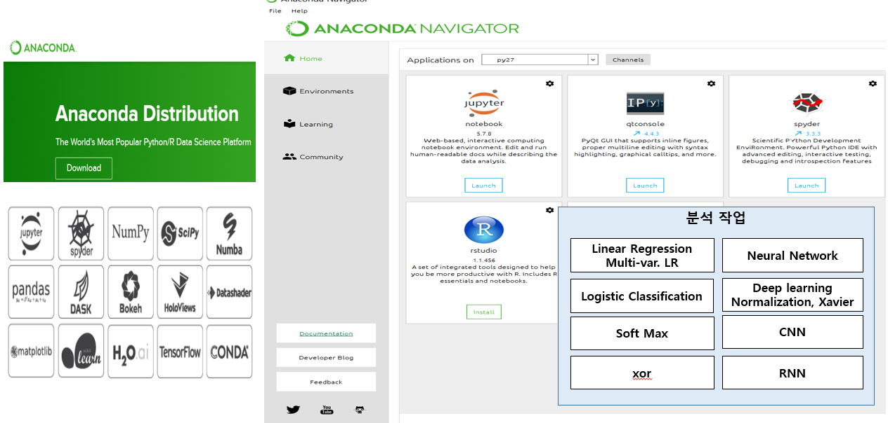

2019 스마트 제조혁신 전문가 양성 과정
*** 스마트 제조혁신의 새로운 기술 2 - Big data, AI, Cloud/Edge Computing우리가 직접 빅데이터 활용하여 가치를 만들어 보자
지금은 API Economy, 좋은 것을 가져다 사용하는 시대이다.
1. 빅데이터로 생산성 증대, 원가절감 및 새로운 고객가치를 할 수 있는 많은 사례(기회) 가 있지만 쉽지는 않다.
2. 빅데이터 아이디어는 기업 내부에서 스스로 개발하는 것이 가장 효과적이다.
3. 빅데이터에 대한 준비가 필요하다. 많은 투자를 하면서도 실효성이 없는 이유는 이 사실을 간과하기 때문이다.
AI/ML에 대한 개념이 왜 중요하며 어느정도 수준으로 이해할 것이며, 어떻게 아이디어를 개발하는가
* 빅데이터에 대한 생각(속도, 융합, 새로운 가치, 비용대비 효과, 업무 담당자가 생각하는 아이디어)을 다시 보고 * 우리 기업에 적용하여 실행해 보자 !
바로 사용하는 통계 그리고 가치를 만들어 낼 수 있는 빅데이터를 해 보자!
이제 새로운 고객가치는 빅데이터와 디지털 기술을 융합한 것에서 발생하고 있으며, 점차 초연결의 사회로 나아가고 있다.4차 산업혁명의 초 연결의 의미를 제조기업 관점에서 보면 기계, 자재, 공정, 사람들 간에 정보가 연계되고 가상 공간에서 시물레이션하여 최적의 방안으로 의사결정하는 CPPS 시대이다.
L_Video_clip_UseCase_DT_ERP_PLM빅데이터 활용을 위해 우선 필요한 것은?
빅데이터 개념
L_ChungNam_SF_BDA_p2_공유_16빅데이터가 왜 중요하며, 빅데이터의 절차, 그런데 막상 적용하려면 왜, 어려운지..., 빅데이터 활용을 위한 아이디어 개발 방법 소개
L_Program_Code_summary빅데이터 개념 이해를 위한 사전 지식 및 BDA Contents list, 핵심 개념 및 Code : R/Shiny , AI, ML Web/Cloud
* 작업현장에서 발생한 데이터가 클라우드 분석 서버에 저장되어 분석되어 실제 활용되기 까지의 전체 흐름
* 우리가 오픈소스(R, Shiny, Python)을 배우는 이유는 즉시 활용하거나 아이디어를 개발하기 위함이다.
통계분석 핵심 정리
510. BDA_Statistics_quick_review* 통계를 활용 시각화 만으로도 상당히 가치있는 정보를 얻을 수 있지만, ...
* 이 두 표본은 하나의 변수에 결과값 (품질등급, 생산성) 을 보여주고 있는데 어떤 특성을 가지고 있는가 ?
* 한단계 더 깊이 있는 질문들을 현장의 전문가들이 스스로 할 수 있어야 한다.
기존 변수 외에 다른 변수를 추가하여 다시 점검하면 같은 데이터라도 완전히 다른 결과를 보여준다.
오픈소스 개요
L_Program_Code_IDE_openSource* 빅데이터 관련 오픈소스 (R, Shiny, Python, WEB:HTML/CSS)의 프로그램 언어, 개발환경(IDE) 관련 설명

* 빅데이터 관련 오픈소스와 소스코드 형태
R code
310. System_demo_R주요 통계분석과 R Code 소개
312. DA_R2_code
C:\R\work_r // example.R : 기본적인 데이터 조작, eigenvalue, runExample app / sta_1_t-test, anova, pca : 주요 통계분석 /
system_demo_shiny.R : Shiny program code
R graph
420. PL_R_graphR을 이용한 각종 통계 분석 그래프 시각화 방법
Shiny 16 tool
312. DA_Shiny_16_tool주요 통계분석을 Shiny 웹으로 구현
Shiny code
420. PL_ShinyC:\R\work_r\source : 데이터셋을 이용 t-test, anova 분석 웹 프로그램을 Shiny로 작성
shiny 화면구조
머신 러닝 개념
321. ML _Concept_Basic머신러닝에서 배열의 중요성

Python
320. System_demo_Python_tf_tb주요 머신러닝 알고리즘

머신러닝 Linear Regression, SoftMax, Logistic Classification, CNN, RNN Concept 소개
322. ML_python_demo : 정규화, Overfitting
머신러닝 알고리즘 실제 code 내용 소개
412. Python_detail
Python 머신러닝 알고리즘 Detail
413. Python_tf_tb
TensorFlow, TensorBoard 활용
Programing
TensorFlow, TensorBoard 활용
머신러닝을 위한 오픈소스 프로그램 설치 및 분석 프로그램
web
600. web_html_cssweb으로 빅데이터 분석 프로그램 구축 및 시각화 분석내용 조회
HTML tag list
web 작성을 위한 HTML Tag 모음
Programing
320. System_demo_Python_tf_tb
프로그램 작성, API, Library 활용 방법에 대한 개념 정리
Java Python R 비교
Java, Python, R Code 비교변수선언, 데이터형(변수 타입, 데이터 타입), 함수, 조건문, 반복문, 클래스, 인스턴스 등에 대한 유사한 작성 방법 정리
BDA Book Part 4 참조
MSA
Agile 방식의 개발EBU에 의한 Prototype의 실현
빅데이터 관련 자료 구조
* 그림 설명 : 빅데이터 관련 개념설명, 오픈소스 프로그램의 기본/상세 내용 및 상호 연관된 프로그램 사항

arduino program 작성
* 빅데이터 관련 개념설명, 오픈소스 프로그램의 기본/상세 내용 및 상호 연관된 프로그램 사항
그러나, 그러한 기회는 단지 솔루션이나 시스템을 도입한다고 해결되는 것이 아니라 프로세스와 필요한 데이터들이 준비가 되어 있어야 한다. 그럼에도 준비사항은 도외시 한채 무조건 "스마트 팩토리"를 추구하는 경향이 있다. 스마트 팩토리를 하기만 하면 기업은 성공을 하고 경쟁력을 확보하는 것인가. 원래 제조업에서 4차 산업혁명의 근본적인 목적은 고객에게 새로운 가치를 주고 기어은 생존과 경쟁력을 확보하기 위함이다.
- 그러기 위해선 제일 먼저 고민할 부분이 기업이 수행하는 사업방식이나 제품의 경쟁력이다.
- 두번째는 제품을 만들어 내는 설계, 구매, 생산방식이 얼마나 효율화되어 있는 지에 대한 운영 효율화 이다.
- 세번째는 외부의 변화에 신속하게 대응할 수 있는 프로세스와 시스템을 갖추고 새로운 가치를 위해 외부와 협력하고 빅데이터를 얼마나 활용할 수 있는 지 이다.
이러한 것들을 가능케 하는 것이 기업 내부적으로 디지털 기술과 빅데이터의 이해를 바탕으로 디지털 분임조 활동과 같이 계속하여 혁신을 지속하는 것이다.
* Book 3장 : 빅데이터 이해를 위한 사전 준비 사항

* Book 4장 : 빅데이터 활용을 위한 오픈소스 이해